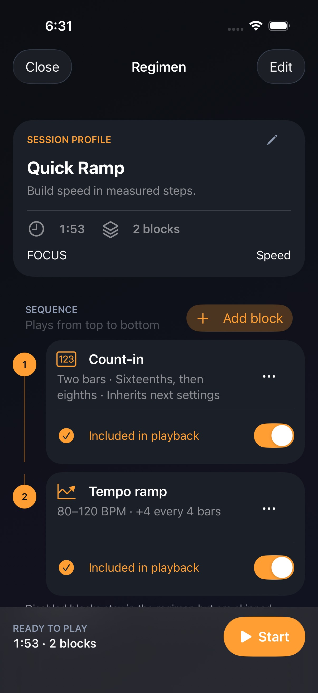
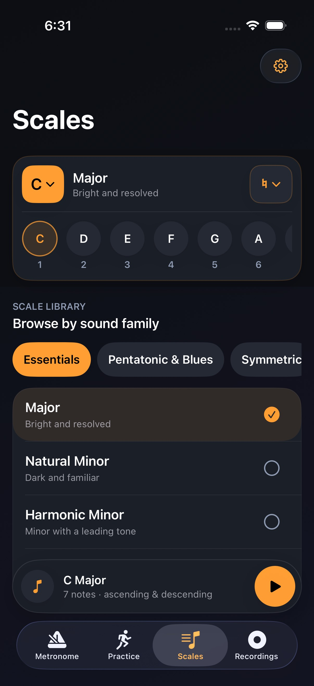
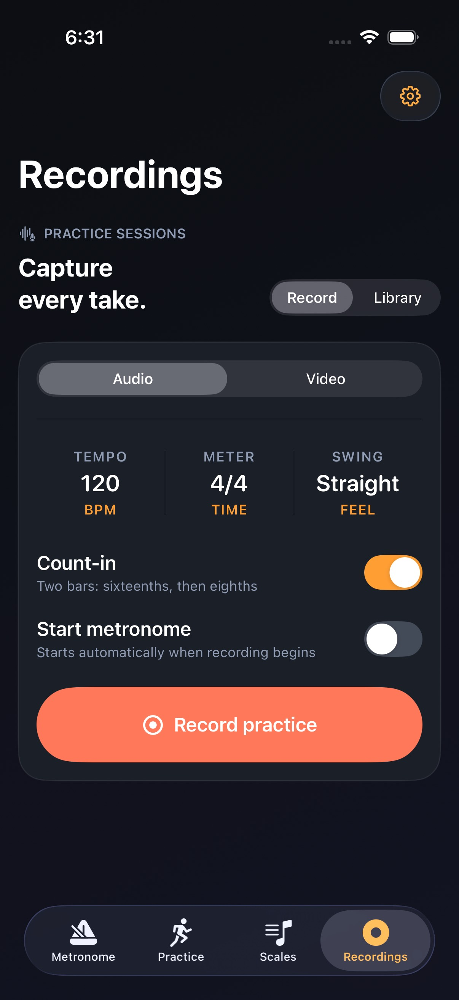

Find the pulse.
Configurable meter, swing, quick tempos, count-ins, gap bars, and background audio behavior keep timing useful without making it complicated.
Practice companion for iPhone
Keep time, shape the work, capture the session, and hear the progress without breaking focus.
A continuous loop
for deliberate practice.
Local-first
by design.

The practice loop
Choose a regimen, run it against reliable timing, reference scales, capture a take, and review the result in one coherent workspace.
Configurable meter, swing, quick tempos, count-ins, gap bars, and background audio behavior keep timing useful without making it complicated.

Reusable multi-block regimens support ramps, repetitions, recovery, and deliberate progression.

Browse sound families, choose any key, and hear each pattern ascending and descending without leaving the practice flow.

Local audio and video capture make it easier to review a session and decide what comes next.
Privacy is product design
Ostinova explains device information, location, recordings, advertising choices, and your rights in plain language.
Read the privacy policy